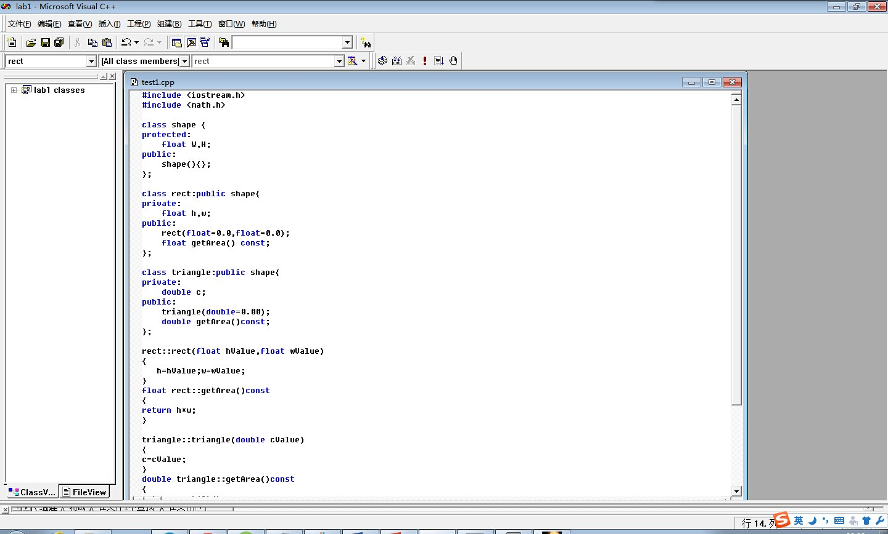

来自两种语言的风暴
2014.12.9 USTB 806lab
简单说一下感受吧，自今天下午从c++机房出来，头脑中就一直在思考关于类的派生和继承中看似不太复杂，但又很难理解深入的概念。回到实验室后想继续做一点面向对象的练习，就去六维上下了VC++的相关配置。在做之前老师布置的关于继承的构造函数和二义性时候并没有遇到什么困哪，但就在一道条件编程题上卡住了，还卡了挺久。是关于由图形类派生出矩形和等边三角形并定义一个返回图形面积的函数。具体细节也不过多提了，属于代码习惯不够严谨造成的不良影响。
还是上张图吧~

下面回到正题。这篇文章的标题叫“来自两种语言的风暴”，那可能你就会问还有一种语言哪去了？没有绰确实还有另一种语言——javascript。今天刚去图书馆又借了一本不是O'reilly系类的js书，是周爱民写的，开始我以为也是类似于good parts of js ，不过才看介绍我就确信我之前想少了 。。作者将语言重新分类，一种是一java，c#为主导的命令式的，又叫静态的语言；另一种是以list为原型,类似javascript的说明式的，很显然这类语言是偏向于动态的。而不巧的是如今我正好同时在学习两种意义深远的面向对象的编程语言。。。/*想想就有点肾上腺激素分泌紊乱*/
又想起之前青楠提到过的关于js要注意点。
我就跟着回忆来吧，js要注意词法作用域，闭包，还有深入理解函数式编程如何做到在单线程的情况下依然高效。/*虽然不可否认轻量化的脚本语言不需要编译的特性在此会起到作用*/ 。。还有类似Java有工厂类，js中有由类产生的类工厂函数，这一点也貌似十分有趣。。
最后提一下Node.js,可能是对于前段来说node的路由提供了新的和后台进行数据交互的方式，所以可以感受到在js体系中还是起到至关重要的作用的，至少不会亚于JQuery吧、、O(∩_∩)O。
好了今天就到这了，以后还会及时推送~
关于HTML的一些思考，写的还不错哦
2014.11.10 USTB 806lab
1.HTML5是什么？
HTML5是我们所知道的HTML标签、DOM（Document Object Model）、CSS、Javascript的统称。其实，我们在HTML5之前的版本中，编写网页时，在进行显示的渲染和网页的内部交互时也常用到这些技术，但是它的缺点是只能访问本地资源的能力很弱，几乎是没有。在HTML5中对这些能力进行了增强，增加了一些新的标签（如Canvas，用于2D图形的加速和渲染）、Devece API（用于获取本地设备的信息，如音视频等）、SystemInfo API（用于获取系统CPU、存储等信息）等类似于Native Application访问本地资源的能力。
2.HTML5的开发效率及平台兼容性：
开发效率：由于HTML5所涉及到的前端技术主要是HTML Tag、DOM、CSS、 Javascript，这些东西相对比较简单且易于理解，所以对于相关应用的开发效率比较高，但前提是（个人观点）HTML5的相关API和目标浏览器对你想要使用的Native Feature有良好的支持，否则你会一筹莫展。
兼容性：一直以来，这是HTML引以为豪的地方。但它的兼容性依赖与HTML应用所运行的浏览器内核引擎，所以我们在讨论它的兼容性时，不能忽略的是当下几大主要浏览器内核的支持和差异。主要的浏览器内核有：IE、Gecko（Firefox）、webkit、opera等。
3.HTML5现状及应用领域：
现状：HTML5当前版本已经稳定，不再追加新的功能特性，对于新的需求会在HTML5.next中追加（Paul Cotton(W3C HTMl工作组联合主席）。现行的主流浏览器都宣称对其进行了支持，如IE、Firefox、Opera（国内叫欧朋）、Safari，国内的有傲游、QQ、乐视、百度等。
应用领域：目前无论是W3C、一线厂商（如Microsoft、Google、Opera）、还是二线应用厂商（如QQ、百度等），他们的注意力主要集中在多媒体和页游（新听到的名词：网页游戏）领域。开发者以年轻人居多，主要追求的是表现的灵动和炫酷，我想这样的氛围必然会催生更多的HTML5对Native Feature特性的支持。
4.浏览器内核的依赖：
当前从研发角度看，浏览器由IE一统天下的局面已经不复存在（虽然最终用户还没有明细的感觉），为什么大家会不遗余力的来开发基于HTML5的自己的浏览器呢？理由很简单：大家都想以此来构建自己的IT产业链。这种状态下要保持浏览器内核稳定性和公开性是很难的，因此我们在选择时要小心：）
关于老罗罗永浩的最后一次个人演讲
2014.12.07 USTB 6斋635
之前看过老罗在北展12年那场堪称经典的演讲，顿时被屏幕上那个浑身散发着理想主义气息的胖子所吸引。当时从方舟子到西门子，都被他黑得一塌糊涂。“人家千里迢迢来看你，你在看什么？？ 妈的当时我就打算做手机” “人非舟子，孰能无过” “我也不是不会耽耽哦” “乔布斯做鬼也不会想到自己的接班人生在中国” ..一系列语录堪称经典。当然后来他和王自如的直播骂架我也没有错过。说实话我觉得最为一个公众人物以一种说相声的方式把一个专业评测机构的创始人给骂了一顿这件事本身就不是很光彩，就如一些网友的评论“赢了辩论，输了素质”。自此舆论的天平貌似就不在偏向于这个“饱含情怀”有饱受争议的主。平心而论，老罗没做过什么伤天害理的事，为什么会造到痛恨？他到底得罪谁了？这是个很有意思的问题。我公开发帖征求网民痛恨他的理由，经整理后形成了自己的分析。
1、两个食言
食言一：说过不做3.5寸以上机，结果锤子是大屏的；食言二：讨厌高价开卖随后降价促销，但自己也这样做了。
我觉得非常好笑，做产品当然需要不断修改设计方案，起初觉得大屏没法单手操作，后来有了下拉悬屏的方案，大屏也能单手操作了，于是推翻了不做3.5寸以上机的设想，这种与时俱进有什么可指责的？恰恰相反，如果一个CEO不能审视度势从善如流，那才是要不得的。
有的厂家首卖时刻意放出个高价，随后降价倾销，这种营销手法是对用户的欺骗，罗永浩对此表示过反对。首卖3000元的锤子，没多长时间也降价了，但这并不是他所反对的欺骗性营销，而是因产能问题错过了销售窗口，在各方面的挤压之下被迫降价，这个局面并不是他所乐见的，更不是他的刻意设计。
给先期购买者退钱，这不是商业规则所要求的，而是一种非常体面的做法。降价是正常商业行为，退钱是道义和人情，连这都会被辱骂指责，只能说明有些人的心肠坏了。
2、三个事件
事件一：销量数据乘3事件，天猫公开认错，并开除了员工，这与罗永浩无关；事件二：称不会低于2500，否则是你孙子，但那指的是首售价格，而实际首售价格是3000，这事罗没问题；事件三：国家会议中心演讲跳票，有人称是罗偷撤预订，并嫁祸国家会议中心，而该中心称是公安备案未通过，罗没有撒谎。
我在上述事件上是完全相信罗永浩的，这不是源自对他人品的信任，而是对他不是傻子这件事的肯定。我有一个理念“可以认定对方是个唯利是图的小人，但不能认定对方是个自掘坟墓的傻瓜”。
先分析销量数据乘3事件，假设罗永浩授意数据做假，这能获得的好处其实并不大，但所冒的风险却是巨大的，事件一旦败露，他的人品就彻底破产了，如果你是罗永浩，会做这种收益很小但风险极大的事吗？您肯定不会，那为什么您会相信更加老江湖的罗永浩会做出如此蠢事呢？
“低于2500是你孙子”的说法也是如此，任何智商正常的人都知道电子产品一定会降价，这只是个时间早晚问题，任何智商正常的人也不会为永远的事打包票，如果您是手机厂商的CEO，您会做出“即使海枯石烂，我的手机也不会低于2500”的承诺吗？您肯定不会，因为您不是傻子，那您凭什么认为罗永浩就是个傻子呢？
事情很明显，2500元指的就是首售价格，而那时已经临近首售，想必罗永浩及公司都已经做出了决定，这才敢拍胸脯子，而不是指手机价格永远不会低于2500元。
在国家会议中心偷偷退订的猜忌就更加滑稽了，如果换作是您，偷偷退订然并嫁祸国家会议中心，您就不担心事发后身败名裂？您凭啥肯定国家会议中心的领导甘愿为您背屎盆子而不吭气？
在国家会议中心订场馆是件大事，退订总会有个手续吧，即使没手续也得有个罗永浩的电话吧。如果哪天会议中心领导把手续或电话录音一公开，罗永浩就得信用破产。还有人猜测会议中心领导是罗永浩的铁哥们或吃了罗的好处，那换您敢不敢主动把一枚能炸死自己的雷塞到别人手里？
我的理念其实还有后半段，完整的表述是“可以认定对方是个唯利是图的小人，但不能认定对方是个自掘坟墓的傻瓜，这样认定的人才是真正的傻瓜。”
3、一个道歉
普通网友说错话了被指出，有的会选择死不认账，由于没有啥影响力，嘴硬两天也就挺过去了，没人会有兴趣揪住不放。而罗永浩不同，他是活在望远镜、放大镜、显微镜下的人，即使没错也能给你编造出无数疑点，若真有铁证不认那还了得。
罗永浩曾批评讽刺过魅族销量，证据表示他引用的数据错了，他选择的应对方式是公开认错道歉，而且连续多天置顶。这正是他的聪明之处，人非圣贤都会犯错，犯错后马上认错道歉，并不损伤人品，而一旦死不认账，就会成为一辈子的话柄。
自己错了及时认错是必须的，那对自己没错的诋毁要不要澄清？对于罗永浩这样的争议人物来说，理智的做法就是不加理会。
有个朋友给我说过茅台酒厂打假的事，其实假茅台酒的辨别和倒查很容易，但动静搞得大了，会出现市场上到处都是假茅台的舆论，反而会影响到真茅台的销售。权衡再三，打假还得接着搞，但要控制规模，允许与一部分假茅台共生。
同样的，上述的三个疑问就不能打假，智商够用的网友都懂得我讲的利弊关系，不会被谣言所蛊惑，而相信罗永浩做假的人都是智商不足的。我有一个体会【通过讲理让低智商者意识到自己的智商低，绝大多数结果都是失败的，偶然成功的结果就是引来对方更大的仇恨】，所以说，这是一件毫无意义的工作。
关于罗永浩的做假骗人的说法还将长期存在，这是任何人都无能为力的，根源在于那些人的智商。罗永浩有个名言，大意是【一切问题的根源都是智商】。